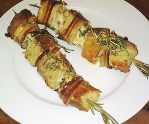

Fischspiess
5,5 von 6Viel Knoblauch und Rosmarin in einem Mörser mit Olivenöl zerstampfen. In Würfel geschnittener Seeteufel, sowie Chiabattawürfel in die Marinade geben. Etwas Salz und Pfeffer dazu. Beides auf einen Rosmarinzweig aufspiessen und mit zwei Tranchen Speck umwickeln. Die Spiesse im Ofen backen.
